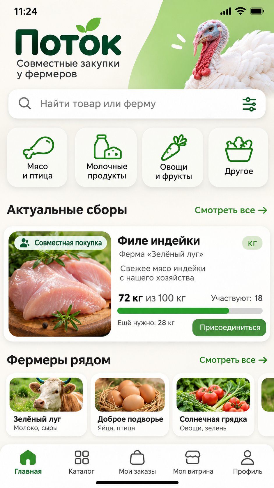
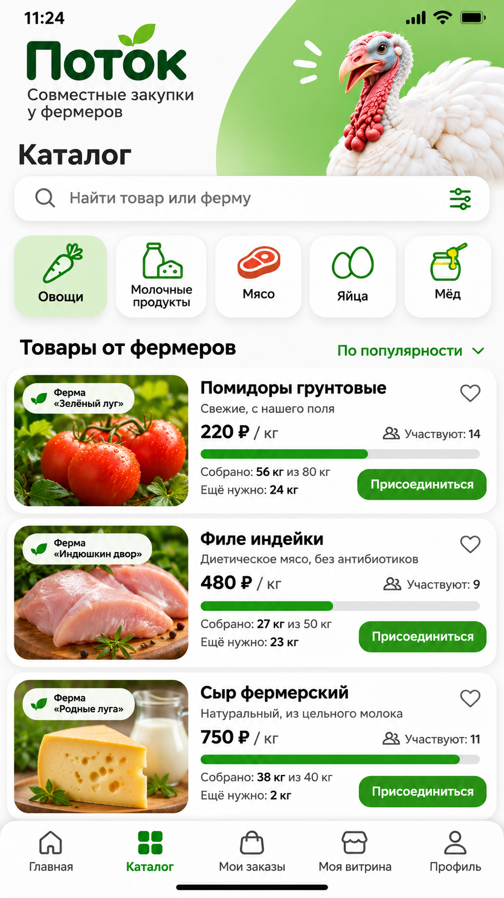
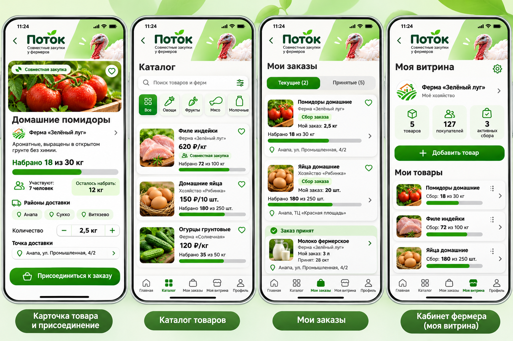

Фермер открывает витрину своего хозяйства. Покупатели рядом собирают заказ вместе — и он принимается, когда набрано минимальное количество.
ВитринаКг, л, штРайоны доставкиОбщий сбор

Выгодно везти партию, а не одну корзину. Минимум в килограммах, литрах или штуках задаёт он сам — пока сумма заявок меньше, рейс не считается принятым.
Видно, сколько уже набрано, сколько человек участвует и сколько ещё не хватает. Можно дозаказать и указать свою точку внутри района фермера.
На витрине только хозяйство продавца: фото, описание, единица измерения. Чужой ассортимент приложение не перепродаёт.
Продавец указывает районы доставки. Заявка принимается только с точкой внутри этих районов.
| Роль | Кто | Что делает |
|---|---|---|
| Продавец | Фермер или частное хозяйство | Одна витрина, товары, фото, районы, минимум. Кабинет «Моя витрина». |
| Покупатель | Житель района | Каталог, карточка товара, количество и точка доставки. Раздел «Мои заказы». |
Отдельных учётных записей на роли нет: один пользователь, телефон или email, доступ по JWT. У пользователя не больше одной витрины.
Филе индейки, ферма «Зелёный луг»: 72 кг из 100 кг, 18 участников, ещё 28 кг. Кнопка «Присоединиться».
В одной транзакции проверяет район, прибавляет количество и, если минимум достигнут, включает окно дозаказа и запрет отмены. Чужой район отклоняется.
Включается вместе с минимумом. Новые заявки в окне X принимаются, старые не отменяются. После окна открывается следующий сбор.
Товар или ферма, мясо и птица, молочное, овощи и фрукты.
Карточка показывает хозяйство, описание, прогресс в единицах товара и число участников.
«Зелёный луг», «Доброе подворье», «Солнечная грядка» — вход в витрину хозяйства.

В каталоге фильтр «Овощи» и сортировка по популярности. У каждого товара своя единица и свой минимум.
Ферма «Зелёный луг», 220 ₽/кг, собрано 56 из 80 кг, участвуют 14 человек, ещё 24 кг.
Филе индейки 27 из 50 кг, сыр 38 из 40 кг — до минимума сыра осталось 2 кг, заказ почти закрыт.
Цена на макете показывает полку. В текущем ТЗ деньги, оплата и комиссия ещё не входят в объём.

Карточка и присоединение · каталог · мои заказы (текущие и принятые) · моя витрина: товары, покупатели, активные сборы.
| Часть | Технология | Зачем |
|---|---|---|
| Клиент | Expo, React Native, TypeScript | Витрина, товар, заявка, кабинет продавца |
| API | Django 6, Django Ninja | Правила заказа, JWT, OpenAPI |
| Данные | PostgreSQL | Витрины, товары, районы, заказы, заявки |
| Фото | Каталог MEDIA_ROOT, хранилище Django | Телефон читает картинку по ссылке того же хоста |
Клиент не решает, принят ли заказ, и не ходит в базу. Оплата, слоты доставки, чат, рейтинги, пуши и модерация в эту версию не входят.
Два человека: бэкенд и мобильный клиент. Макеты экранов уже есть. Оплата и маршруты в срок не заложены.
| Недели | Результат |
|---|---|
| 1–2 | Модели, регистрация, JWT, витрина, товар, районы, загрузка фото. |
| 3–4 | Совместный заказ: заявка, блокировка, приём по минимуму, состав заказа. |
| 5–6 | Экраны покупателя и кабинет фермера по макетам, ошибки API, повторный запрос хода сбора. |
| 7–8 | Сборка, сервер, пилот на одном районе с 5–10 хозяйствами. |
Один разработчик на оба контура — ориентир 12–14 недель. После пилота отдельно считаются оплата, уведомления и слот доставки.
5–10 ферм одного района, у каждой живой сбор. Пустая витрина не запускаем: первый минимум должен закрыться на глазах.
Рынок, дегустация у хозяйства, чаты дома и дачи, объявления района. QR ведёт сразу на открытый сбор, а не на общую страницу.
Покупателю выгодно привести ещё людей: «ещё 24 кг помидоров» — понятный повод написать в чат дома.
Короткое фото сбора и факт «заказ принят, везём в Анапу, Сукко, Витязево». Следующий район открываем, когда в первом стабильно закрываются минимумы.